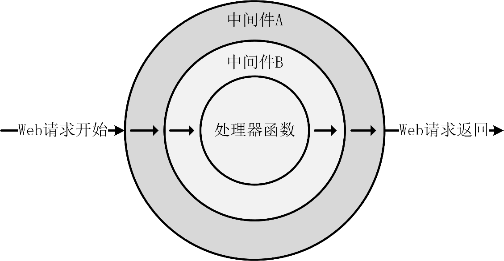

Web 服务核心功能：添加 gRPC 拦截器
Web 中间件介绍
中间件（Middleware）是位于应用程序请求-响应处理循环中的一个特殊函数。它可以在请求到达业务逻辑处理之前修改/处理请求，或是在响应返回给客户端之前修改/处理响应。中间件根据使用方又可分为客户端中间件和服务端中间件，两者在实现原理和使用方式上是一致的。
中间件的核心作用是对请求或响应进行预处理、后处理或监控。它允许在请求和响应被发送或接收之前或之后插入自定义逻辑，从而实现多种功能，例如认证、授权、日志记录、性能监控、错误处理、请求验证、跨域支持、限流等。以下是核心使用场景的详细说明：
- **认证和授权：**使用中间件可以实现认证和授权逻辑。在中间件中，可以验证请求者的身份、权限等信息，并根据情况决定是否允许请求继续进行；
- **日志记录：**中间件可以用于记录请求和响应的详细信息，从而实现日志记录和监控。可以记录请求的内容、调用的方法、响应的结果等，以便于调试和分析；
- **错误处理：**在中间件中可以捕获和处理 gRPC 调用过程中可能发生的错误，以提供更友好的错误信息或进行恢复操作；
- **性能监视：**使用中间件可以监视 Web 调用的性能指标，如调用时间、响应时间等，从而实现性能监控和优化。
使用 Web 中间件能够带来诸多优点，主要包括以下几点：
- **提升代码复用性：**中间件可以在多个路由、甚至不同项目中被重复使用。通过提取通用功能为中间件，不但减少了重复代码，还降低了开发和维护成本；
- **提高代码的模块化：**中间件允许开发者将应用程序的通用功能抽象为独立的模块。每个模块在一个独立的处理中间层中实现，可以专注于特定功能，而无需杂糅到主业务逻辑中。另外，代码模块化，也可以增强代码可维护性，修改某个功能时，只需调整相关的中间件，而不会影响主代码逻辑；
- **方便处理全局功能：**中间件可以拦截和处理所有请求，非常适合用来实现一些通用的功能。例如错误处理、数据验证、CORS 支持等，都可以在中间件层处理，而不需要在每个业务逻辑中重复实现；
- **支持中间件链式调用，便于扩展功能：**中间件通过链式调用机制，可以轻松扩展新功能，而无需改动现有代码。例如，在一条请求处理中，可以先进行身份验证，然后验证权限，最后记录日志。通过中间件链的组合，扩展新的功能就像添加新的链环一样简单。
目前主流 Web 框架均支持中间件功能。尽管在不同框架中可能有不同的称谓，例如 Filter（过滤器）、Middleware（中间件）、Interceptor（拦截器）等，但其核心机制相似。
Web 中间件工作原理如图 8-1 所示。

图 8-1 中，有两个中间件：中间件 A 和中间件 B。一个 Web 请求从开始到结束时的执行流程为：中间件 A->中间件 B->处理器函数->中间件 B->中间件 A，其执行顺序类似于栈结构。
Web 中间件的作用实际上是实现对请求的前置拦截和对响应的后置拦截功能：
- **请求前置拦截：**在 Web 请求到达定义的处理器函数之前，对请求进行拦截并执行相应的处理；
- **请求后置拦截：**在完成请求的处理并响应客户端后，拦截响应并进行相应的处理。
需要注意的是，中间件会附加到每个请求的链路上，因此如果中间件性能较差或不稳定，将会影响所有 API 接口。因此，在开发中间件时，应确保其稳定性和性能，同时建议仅添加必要的中间件。
gRPC 添加拦截器
gRPC 框架也支持 Web 中间件，在 gRPC 框架中，Web 中间件叫拦截器。本节会详细介绍如何实现并添加 gRPC 拦截器。
gRPC 拦截器介绍
gRPC 拦截器是一个 Web 中间件。利用拦截器，开发者可以在不侵入业务逻辑的前提下修改或者记录服务端或客户端的请求与响应，利用拦截器可以实现诸如日志记录、权限认证、限流等诸多功能。
gRPC 的通信模式分为 Unary 和 Streaming 两种模式，拦截器也分为两种：UnaryInterceptor（一元拦截器）和 StreamInterceptor（流式拦截器）。这两种拦截器可以分别应用在服务端和客户端，所以 gRPC 框架中，一共提供了四种拦截器：
- **UnaryServerInterceptor：**服务端一元拦截器，适用于简单 RPC 调用。它会在服务端接收到请求时执行拦截逻辑，通常用于对请求进行预处理、授权、认证、日志记录、错误处理等；
- **StreamServerInterceptor：**服务端流式拦截器，适用于流式 RPC 调用，例如客户端流式、服务端流式和双向流式 RPC 调用。它会在服务端接收到流式请求时进行拦截，允许开发者对流式数据进行操作和处理；
- **UnaryClientInterceptor：**客户端一元拦截器，适用于简单 RPC 调用（Unary RPC）。它会拦截客户端发起的调用，通常用于操控请求或响应，比如：请求重试、请求参数的统一注入、加密、客户端的日志记录等；
- **StreamClientInterceptor：**客户端流式拦截器，适用于流式 RPC 调用（客户端流式、服务端流式、双向流式）。它允许在流式调用时通过拦截客户端流（ClientStream）创建过程自定义逻辑，开发者可以围绕流式数据进行操作。
本课程只介绍 miniblog 项目使用的 gRPC 拦截器类型：UnaryServerInterceptor 和 UnaryClientInterceptor。另外两种拦截器类型，你可自行查找资料学习。
实现请求 ID 拦截器
在实际应用开发中，常会遇到如下场景：某用户执行某次操作失败，并向开发人员寻求问题定位和修复。这时，用户通常会提供一些基本的请求信息，供开发人员进行问题排查。
在定位问题时，大多数情况下需要通过查找日志来发现问题。然而，用户提供的信息可能不足以精确定位问题，或者查找到的日志并非与用户请求对应的日志记录。在这种情况下，该如何处理？
目前最优的解决方案是：为每次请求注入一个唯一的 RequestID（或者 TraceID），并在每条日志中输出该 RequestID。这样，用户只需提供一个唯一的 RequestID，开发人员即可快速定位与该请求相关的所有日志记录，从而提高问题修复的效率和准确性。为应用添加 RequestID 具体需要实现以下功能：
- 在请求中注入 RequestID；
- 在日志中打印 RequestID。
因为每个请求都需要添加 RequestID，所以很自然的，考虑使用 gRPC 拦截器来实现。因为 miniblog 实现了简单模式的 gRPC 服务，并且 RequestID 是在服务端收到请求时添加，所以需要实现 UnaryServerInterceptor 类型的拦截器。
新建 internal/pkg/middleware/grpc/requestid.go 文件，在该文件中实现一个 RequestIDInterceptor 拦截器，用来给每个请求生成 RequestID。考虑到代码的可维护性和可复用性，将拦截器统一保存在 internal/pkg/middleware 目录中。miniblog 同时使用了 Gin 框架和 gRPC 框架，两种框架的中间实现方法不同，所以需要将 gRPC 拦截器和 Gin 中间件分别保存在 grpc 目录和 gin 目录中。
internal/pkg/middleware/grpc/requestid.go 文件内容如代码清单 8-2 所示。
// RequestIDInterceptor 是一个 gRPC 拦截器，用于设置请求 ID.
func RequestIDInterceptor() grpc.UnaryServerInterceptor {
return func(ctx context.Context, req any, _ *grpc.UnaryServerInfo, handler grpc.UnaryHandler) (any, error) {
var requestID string
md, _ := metadata.FromIncomingContext(ctx)
// 从请求中获取请求 ID
if requestIDs := md[known.XRequestID]; len(requestIDs) > 0 {
requestID = requestIDs[0]
}
// 如果没有请求 ID，则生成一个新的 UUID
if requestID == "" {
requestID = uuid.New().String()
md.Append(known.XRequestID, requestID)
}
// 将元数据设置为新的 incoming context
ctx = metadata.NewIncomingContext(ctx, md)
// 将请求 ID 设置到响应的 Header Metadata 中
// grpc.SetHeader 会在 gRPC 方法响应中添加元数据（Metadata），
// 此处将包含请求 ID 的 Metadata 设置到 Header 中。
// 注意：grpc.SetHeader 仅设置数据，它不会立即发送给客户端。
// Header Metadata 会在 RPC 响应返回时一并发送。
grpc.SetHeader(ctx, md)
// 将请求 ID 添加到 ctx 中
//nolint: staticcheck
ctx = contextx.WithRequestID(ctx, requestID)
// 继续处理请求
res, err := handler(ctx, req)
// 错误处理，附加请求 ID
if err != nil {
return res, errorsx.FromError(err).WithRequestID(requestID)
}
return res, nil
}
}
代码清单 8-2 实现了一个针对服务端一元调用（Unary RPC）的服务端一元拦截器 RequestIDInterceptor。
RequestIDInterceptor() 方法会返回一个 grpc.UnaryServerInterceptor 类型的函数。该函数，会先尝试从 gRPC 请求的元数据中获取键为 x-request-id 的请求 ID，如果没有获取到就调用 uuid.New().String() 方法生成一个请求 ID，并将生成的请求 ID 保存在 gRPC 请求和返回的元数据中。
提示：
在 gRPC 通信中，元数据（metadata）是一种轻量级、灵活的机制，用于通过上下文传递额外的信息（如认证信息、追踪 ID 等），类似于 HTTP 中的 Header。Metadata 本质上是一组键值对，可以在 RPC 调用的请求和响应双方进行交换。这些键值对通常被用作元信息，而不是直接与业务数据相关。
gRPC 框架中的 google.golang.org/grpc/metadata 包，提供了 FromIncomingContext(ctx) 方法用来从 context 中获取元数据。提供了 grpc.SetHeader 方法用于将元数据设置到 Header 中。
在代码清单 8-2 中，通过 contextx.WithRequestID(ctx, requestID) 调用，将请求 ID 添加到自定义的上下文中，便于后续业务代码或日志记录使用。上述代码，还会判断 gRPC 请求是否成功，如果失败会将请求 ID 添加到错误信息中。gRPC 请求的返回元数据中，已经包含了请求 ID，这里再次将请求 ID 添加到 gRPC 的返回错误中，原因如下：
错误中包含请求 ID 更易定位问题：在 Go 项目开发中，逻辑代码基本都会对错误进行处理，例如打印错误。所以将请求 ID 包含在错误信息中，在客户端请求报错后，能够通过错误信息，直接获取到请求 ID，从而根据请求 ID 快速定位问题；
gRPC 元数据很少被处理：在 Go 项目开发中，有不少开发者不会处理 gRPC 元数据，所以将请求 ID 保存在元数据中，可能并不会被处理。
gRPC 服务加载拦截器
在开发了 RequestIDInterceptor 拦截器之后，还需要将该拦截器添加到 gRPC 请求链中。修改 internal/apiserver/grpcserver.go 文件，添加以下代码：
import (
...
mw "github.com/onexstack/miniblog/internal/pkg/middleware/grpc"
...
)
func (c *ServerConfig) NewGRPCServerOr() (server.Server, error) {
// 配置 gRPC 服务器选项，包括拦截器链
serverOptions := []grpc.ServerOption{
// 注意拦截器顺序！
grpc.ChainUnaryInterceptor(
// 请求 ID 拦截器
mw.RequestIDInterceptor(),
),
}
// 创建 gRPC 服务器
grpcsrv, err := server.NewGRPCServer(
c.cfg.GRPCOptions,
serverOptions,
func(s grpc.ServiceRegistrar) {
apiv1.RegisterMiniBlogServer(s, handler.NewHandler())
},
)
...
}
上述代码创建了一个 grpc.ServerOption 类型的数组，数组中包含了一个 gRPC 请求拦截器链，拦截器链中包含了开发的请求 ID 拦截器。
修改 internal/pkg/server/grpc_server.go 文件中的 NewGRPCServer 方法，添加 serverOptions []grpc.ServerOption 类型的入参，并将传入的 gRPC 服务器配置项列表传给 grpc.NewServer() 方法，从而在启动服务时，加载 gRPC 拦截器链。
请求日志中打印请求 ID
通过 RequestIDInterceptor 拦截器给请求上下文注入了请求 ID，还需要修改日志包，用来在每条日志中输出请求 ID。修改 internal/pkg/log/log.go 文件，添加以下代码：
package log
import (
...
"github.com/onexstack/miniblog/internal/pkg/contextx"
"github.com/onexstack/miniblog/internal/pkg/known"
)
// W 解析传入的 context，尝试提取关注的键值，并添加到 zap.Logger 结构化日志中.
func W(ctx context.Context) Logger {
return std.W(ctx)
}
func (l *zapLogger) W(ctx context.Context) Logger {
lc := l.clone()
// 定义一个映射，关联 context 提取函数和日志字段名。
contextExtractors := map[string]func(context.Context) string{
known.XRequestID: contextx.RequestID, // 提取请求 ID
known.XUserID: contextx.UserID, // 提取用户 ID
}
// 遍历映射，从 context 中提取值并添加到日志中。
for fieldName, extractor := range contextExtractors {
if val := extractor(ctx); val != "" {
lc.z = lc.z.With(zap.String(fieldName, val))
}
}
return lc
}
// clone 深度拷贝 zapLogger.
func (l *zapLogger) clone() *zapLogger {
logger := l.z.WithOptions(zap.AddCallerSkip(-1))
return &zapLogger{z: logger}
}
日志包新增了 W 方法，W 是 WithContext 的简称，之所以用简称是因为将函数名缩短，可以有效减小日志打印代码的宽度，减少日志行代码折行概率，利于阅读。这种简写以节省代码宽度的函数命名方法，在 Go 项目开发中经常会被用到。日志包是基础的 Go 包，开发者在使用日志包时，理解这种简写函数名成本并不高。由于 log 包会被多个请求并发调用，为防止请求 ID 被污染，每个请求都会对 log 包深拷贝一个 *zapLogger 对象，然后再添加请求 ID。
在 RequestIDInterceptor 拦截器中，请求 ID 被注入到自定义上下文中，所以在 W 方法中，就可以使用 contextx.RequestID(ctx) 便捷的从自定义上下文中获取请求 ID。W 方法中，还尝试读取 UserID，并将 UserID 加到日志输出字段中。UserID 是 miniblog 的租户 ID，是关键信息，所以这里也提前实现了 UserID 的日志输出。
在 log 包中，日志字段的键从 known 包中获取。Go 项目开发中，经常会将一些共享常量统一保存在常量包，例如 known、constant 这类包中，以便集中管理和引用。通过从常量包引用共享常量，可以确保代码中相同变量值的一致性，如果后面常量值需要变更，只需变更一个地方即可更新所有引用了该常量的代码，从而降低代码的维护成本。
在 known 包中，定义了以下常量：
const (
// XRequestID 用来定义上下文中的键，代表请求 ID.
XRequestID = "x-request-id"
// XUserID 用来定义上下文的键，代表请求用户 ID. UserID 整个用户生命周期唯一.
XUserID = "x-user-id"
)
gRPC 底层使用了 HTTP/2 作为传输协议，而 HTTP/2 规范规定 Header 的键名必须为小写。因此，在 gRPC 中，所有 Header 键都会被强制转换为小写以符合 HTTP/2 的要求。而在 HTTP/1.x 中，许多实现会保留用户设置的键名大小写格式，但某些 HTTP 框架或工具库（如某些 Web 服务器或代理）可能会自动将 Header 键转换为小写，以简化处理逻辑。考虑到兼容性，在所有场景下统一将 Header 键设置为小写。此外，以 x-开头的 Header 键表明其为自定义 Header。
测试 RequestIDInterceptor 拦截器
为了测试 RequestIDInterceptor 拦截器的执行效果，需要在 internal/apiserver/handler/grpc/healthz.go 文件中的 Healthz 处理器方法中添加以下日志打印：
log.W(ctx).Infow("Healthz handler is called", "method", "Healthz", "status", "healthy")
通过以下命令来测试请求 ID 是否被正确生成并注入到 context 中：
$ make
$ _output/mb-apiserver # 需修改 $HOME/.miniblog/mb-apiserver.yaml文件中server-mode为grpc
打开一个新的 Linux 终端，执行以下命令：
$ go run examples/client/interceptor/main.go
2025/02/01 14:45:13 [UnaryClientInterceptor] Invoking method: /v1.MiniBlog/Healthz
Response Header (key: x-request-id, value: [5ba31a82-8519-492f-a198-d294aef4ef76])
Response Header (key: interceptor-header, value: [interceptor-value])
Response Header (key: content-type, value: [application/grpc])
{"timestamp":"2025-02-01 14:45:13"}
可以看到，在 gRPC 返回的 Header 中，成功返回了 x-request-id。在服务端会输出以下日志：
{"level":"info","timestamp":"2025-02-01 14:45:13.105","caller":"v1/apiserver_grpc.pb.go:117","message":"Healthz handler is called","x-request-id":"5ba31a82-8519-492f-a198-d294aef4ef76","method":"Healthz","status":"healthy"}
可以看到，log 包从自定义上下文中获取到了 x-request-id，并在日志中输出。
UnaryClientInterceptor 示例
feature/s14 分支的 examples/client/interceptor/main.go 文件中，实现了一个 UnaryClientInterceptor 拦截器，如代码清单 8-3 所示。
代码清单 8-3 UnaryClientInterceptor 拦截器示例
func unaryClientInterceptor() grpc.UnaryClientInterceptor {
return func(ctx context.Context,
method string,
req, reply interface{},
cc *grpc.ClientConn,
invoker grpc.UnaryInvoker,
opts ...grpc.CallOption,
) error {
// 打印请求方法和请求参数
log.Printf("[UnaryClientInterceptor] Invoking method: %s", method)
// 添加自定义元数据
md := metadata.Pairs("interceptor-header", "interceptor-value")
ctx = metadata.NewOutgoingContext(ctx, md)
// 调用实际的 gRPC 方法
err := invoker(ctx, method, req, reply, cc, opts...)
if err != nil {
log.Printf("[UnaryClientInterceptor] Method: %s, Error: %v", method, err)
return err
}
return nil
}
}
在代码清单 8-3 中，实现了一个 gRPC 一元（Unary）客户端拦截器 unaryClientInterceptor。在 unaryClientInterceptor 拦截器中，可以获取以下信息：
- ctx：上下文对象，包含请求的元数据和链路信息，可将新元数据传入 gRPC 方法调用时使用；
- method：调用的 gRPC 方法的名称，例如 /package.Service/Method；
- req, reply：请求参数和响应结果（它们是具体的结构体，通常由 .proto 定义的服务方法生成）；
- cc：客户端连接对象（*grpc.ClientConn），表示连接的 gRPC 服务端；
- invoker：gRPC 的实际调用方法，客户端拦截器需要调用它来完成请求的转发，例如向 gRPC 服务端发送请求并获取响应；
- opts：可选的 gRPC 调用选项（grpc.CallOption），如超时时间、拦截机制等，通过它可以传递额外配置。
这里需要注意，unaryClientInterceptor 拦截器中重新创建的 Outgoing Metadata，会覆盖 main 函数中的 Outgoing Metadata。